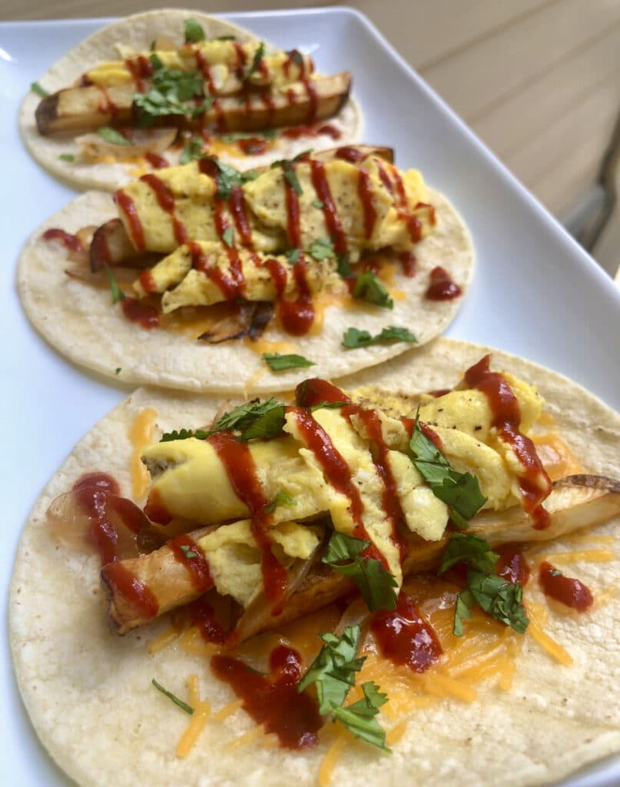

Breakfast Tacos

Day-starter extraordinaire
Egg-and-cheesy tacos with support from the potatoes and hot sauce. Created by The Meal Prep Manual.
INGREDIENTS:
- 4 (94 g) corn tortillas
- 1 small (100 g) russet potato
- 2 large (140 g) eggs
- 1 tbsp (15 g) milk
- 2 slices (46 g) cheese
- 1 tbsp (15 g) hot sauce
- 1 tbsp (5 g) cilantro (chopped)
- ½ tsp (2 g) oil
- 1 medium (200 g) red onion
- 1 tbsp (12 g) sugar
- 1 tsp (6 g) salt (and more as needed)
- 1½ cups (360 g) white vinegar
- 1½ cups (360 g) water
STEPS:
- Wash and cut your potato into small shoestring french fry shapes.
- Place the fries into your air fryer basket and spray with 2g of oil and sprinkle with salt to taste.
- Air fry at 400 °F for 8-10 minutes shaking the basket half way through.
- While the potatoes are cooking, crack 2 eggs into a dish and add a splash of milk and salt. Beat until they are smooth. Cook the eggs in either a pan or in the microwave until they are finished.
- In a dry skillet over medium high heat, add 4 corn tortillas to warm and lightly brown. Flip over and add a half slice of cheese to each to begin to melt.
- To each tortilla, evenly divide the potatoes and eggs. Top each with hot sauce, pickled onions, and chopped cilantro.
- Cut your red onion into thin slices from root to shoot.
- In large mason jar, add 1 tsp of salt, 1 tbsp of sugar, 1½ cups water, and 1½ cups distilled vinegar. Stir to dissolve the solids.
- Add the onions into the mason jar and top with more water and vinegar if necessary to cover the onions. Cap the jar and move it into the fridge to allow the onions to pickle.